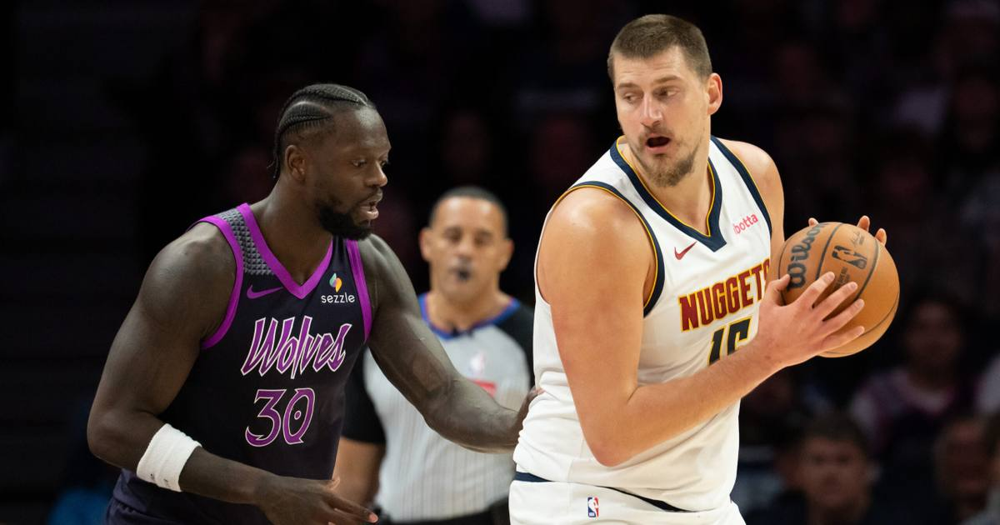

Jokic's triple-double — 27, 12 and 11 — carries the Nuggets to a seventh straight win in Minnesota
Nikola Jokic posted 27 points, 12 rebounds and 11 assists — his seventh triple-double of the season — as Denver erased a halftime deficit and beat Minnesota 123-112 for its seventh straight win, with three teammates scoring 23 apiece.

Disclosure: this post contains affiliate links. I earn a commission on qualifying purchases.
The night
The stat sheet broke before Nikola Jokic did.
A glitch in the NBA's courtside statistics system froze the stat-keeping program late in the third quarter at Target Center on Saturday night, and the final numbers weren't available until hours after the game ended. When they finally landed, they said what everyone in the building already knew: Jokic had 27 points, 12 rebounds and 11 assists, and the Denver Nuggets had their seventh straight win, 123-112 over the Minnesota Timberwolves.
It was Jokic's seventh triple-double of the season, and it came on a night when Denver needed all of it. Minnesota led 60-55 at halftime and had Julius Randle and Anthony Edwards going for 26 points apiece. The Nuggets answered by outscoring the Timberwolves 68-52 in the second half, and Jokic — playing on a sore wrist that had him listed as questionable and a game-time decision — was the one bending the game every time Minnesota threatened to take it back.
He shot 8-of-15 from the field, 3-of-6 from three and a perfect 8-of-8 from the line in 42 minutes. The 11 assists were the corrected final figure after the stat-system crash; early reports had him at 10, and the league's official box score settled it at 11.
Everybody eats
What made the night unusual wasn't just Jokic. It was how little he had to do alone.
Tim Hardaway Jr., Aaron Gordon and Jamal Murray scored 23 points apiece — three teammates matching each other exactly — while Gordon added 10 rebounds and Murray dished out 12 assists. Denver's second half was a clinic in shared offense: four Nuggets finished with at least 23 points, and the ball kept finding the open man no matter who Minnesota tried to take away.
That matters because Denver is doing this shorthanded. The Nuggets were missing both starting forwards: Christian Braun, out with a left ankle sprain, and Cam Johnson, out with a right biceps strain, both hurt during Wednesday's win over the Clippers. Jokic played through his own wrist issue, and the depth behind him delivered the best win of the streak.
Minnesota, meanwhile, saw its four-game winning streak snapped. Randle and Edwards each scored 26, but the Timberwolves got outscored by 16 after halftime and never found a second-half answer for a Denver team that kept getting whatever shot it wanted.
The chase, quietly
Jokic's triple-double counting is becoming a background drumbeat: seven this season, and now sitting within single digits of Russell Westbrook's all-time record of 209. Nobody in Denver is talking about it as a chase — the Nuggets are talking about a seven-game winning streak and a team that keeps finding new ways to win while banged up. But the number is there, and at this rate it stops being a question of if and becomes a question of when.
The Wolves get another crack at Denver soon enough — these Northwest Division rivals have now met twice in Minneapolis this season, with the Nuggets taking both, and twice in the playoffs in the last three years. Saturday night was the latest chapter, and it belonged to the big man whose stat line needed hours to be believed.
Gear up: Fanatics